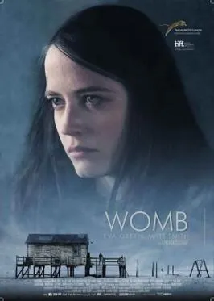

The genetics
Womb is an intimate drama about human reproductive cloning used to bring back a lost loved one. Cloning is available in its near-future world, but socially stigmatised, as shown by the prejudice against children known as "copies". No scientist appears on screen; the film concentrates on Rebecca's decision and its consequences rather than on the technology. Its central question is identity: the clone grows up to resemble the original physically and in temperament, but he is a different person with his own life, and Rebecca's attempt to recover her lover through her son produces an impossible, incestuous relationship. The film thus explores nature versus nurture and the ethics of creating a person to fulfil someone else's wishes. Biologically, a clone is a delayed identical twin that shares its genome but not its memories or experiences. Mammals have been cloned from adult cells since Dolly the sheep in 1996, but human reproductive cloning has never been achieved.
How genetics is portrayed
- Overall portrayal of genetics
- negative Cloning to bring back a loved one is shown as an unhealthy attempt to cling to the past that ends in an unsettling, Oedipal catastrophe; nothing in the film presents it as beneficial.
- Outcome of the genetic intervention
- negative The clone grows up stigmatised as a 'copy' and isolated, discovers he is a substitute for a dead man, rapes the woman who raised him and leaves; the attempt to recover the lover damages both lives.
- Rebecca
- ambivalent Aim: personal (negative). Unable to live without her dead lover, Rebecca has a replication institute clone him and carries and raises the clone as her son; the film follows her grief sympathetically but frames her as obsessive and sinister, from the opening smile to the incestuous outcome.
The story
As children, Rebecca and Tommy swear eternal love, but Rebecca moves to Japan with her mother. Twelve years later she returns and they resume their relationship. Tommy, an activist against biotechnology companies that are opening a park of cloned animals, is killed by a car on the way to disrupt its opening. Unable to live without him, Rebecca decides to have him cloned and to carry the clone herself; Tommy's father gives her his son's cells, despite his wife's objections. She gives birth to a son, also called Tommy, and raises him. Other parents shun clones, whom they call "copies", and Rebecca moves with her son to an isolated house. As an adult, Tommy increasingly resembles the original. When he brings home a girlfriend and the original Tommy's mother appears, he demands the truth; Rebecca gives him his predecessor's laptop, and he rapes her. The next day he leaves, thanking her for the life he has had.